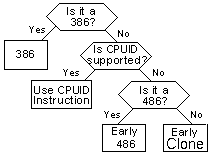

The CPUID Guide
An index to all of the supplementary notes used in this guide. . |
||||||||||||||||||||||||||||||||||||||||||||||||||||||||||||||||||||||||||||||||||||||||||||||||||||||||||||||||||||||||||||||||||||||||||||||||||||||||||||||||||||||||||||||||||||||||||||||||||||||||||||||||||||||||||||||||||||||||||||||||||||||||||||||||||||||||||||||||||||||||||||||||||||||||||
| 1.
What is the CPUID instruction? In the earlier days of x86 computing (when the 486 was supreme), there was a vast amount of different hardware inside PCs, much as there is today, but back in those days "compatibility" was an unknown concept between manufacturers - all their hardware behaved differently, and the poor programmer had to write mountains of code merely to identify the hardware the program was running on, yet alone take full advantage of it's unique features. The CPU was one area where, despite continual advancements by Intel, AMD and others, programs were generally not using any optimisation based on the user's CPU, because it was difficult to know which CPU was being used! When Intel released MMX, however, it decided that it needed to make it easy for programs to recognise it's new CPUs, and utilise the instructions provided to increase the performance of the programs when running under a new CPU (which was good for Intel too - people saw how much faster it was, and they bought the new CPUs). So, they developed the CPUID instruction. This simple assembler instruction gave instant access for the programmer to a lot of information: who manufactured this CPU (e.g. Intel, AMD, Cyrix, etc), what "extra features" it supports (e.g. an FPU, MMX, 3DNow, etc), and other information (see Chapters #5 ,#6 & #7 for how to obtain this information). . |
||||||||||||||||||||||||||||||||||||||||||||||||||||||||||||||||||||||||||||||||||||||||||||||||||||||||||||||||||||||||||||||||||||||||||||||||||||||||||||||||||||||||||||||||||||||||||||||||||||||||||||||||||||||||||||||||||||||||||||||||||||||||||||||||||||||||||||||||||||||||||||||||||||||||||
| 2.
What processors support CPUID? Generally speaking, virtually all Pentium CPUs support the CPUID (opcode 0Fh-A2h) instruction. Also, genuine Intel 486-based CPUs and many 486 clones support it. The Pentium Pro, PentiumII, Pentium III and Pentium IV all support it. All AMD's CPUs support it, and the Cyrix MediaGX, 6x86, 6x86MX and mII (although not without troubles). Anything newer than the above will support it. A simple guideline is that all CPUs available today support CPUID, and Chapter #7 has a complete list of CPUs that support CPUID. Unfortunately, there is a small problem with just calling CPUID to find the CPU information, and that is: If the CPU you are running on does not support CPUID, it will crash (or, as the OS likes to call it, an "Invalid Instruction Exception"). There is a method of "checking" the CPU to see if it supports CPUID, but (of course) the check only works on 486+ class CPUs. Relax, though, because the process (and appropriate source code) to find out as much information as possible from any given CPU type is here, in flow-chart form (this assumes you are using at least a 386, which is a moot point as any compiler you'll find nowadays will require at least a 386 processor)  Here are the code snippets you'll need (assembler with some Pascal wrappings):
|
||||||||||||||||||||||||||||||||||||||||||||||||||||||||||||||||||||||||||||||||||||||||||||||||||||||||||||||||||||||||||||||||||||||||||||||||||||||||||||||||||||||||||||||||||||||||||||||||||||||||||||||||||||||||||||||||||||||||||||||||||||||||||||||||||||||||||||||||||||||||||||||||||||||||||
| 3.
How to call the CPUID instruction. The CPUID instruction is very easy to call from any language that supports in-line assembler. Here is a complete <CPUID vendor program> written for FreePascal. It is a trivial matter to convert to C/C++ or other languages, provided that their in-line assemblers recognise CPUID. CPUID doesn't have any parameters, instead the value of eax is set before calling. This value determines which CPUID function you want to call. Always call eax=$0 first, because this returns the vendor and highest eax value, then you can call the higher functions if necessary & available. . |
||||||||||||||||||||||||||||||||||||||||||||||||||||||||||||||||||||||||||||||||||||||||||||||||||||||||||||||||||||||||||||||||||||||||||||||||||||||||||||||||||||||||||||||||||||||||||||||||||||||||||||||||||||||||||||||||||||||||||||||||||||||||||||||||||||||||||||||||||||||||||||||||||||||||||
| 4.
Making sense of what CPUID returns. The tables below show what values of eax return what information. Take note of the "highest eax value" field, because this is the highest value of eax that you can call CPUID with on that processor. Note that all processors handle eax=$0 the same way (i.e. highest eax, then vendor string), but after that different manufacturers return different information. All CPUs also respond to the 'CPU Features' correctly, and all respond to 'CPU Signature' correctly.
For values of eax=$2 and higher, different CPUs return different information. The table shows information returned by GenuineIntel processors (as they have the official documentation). Others, such as the Cyrix MediaGX enhanced, for example, return cache information in eax=$2. You can of course click any of the above entries for notes about it. . |
||||||||||||||||||||||||||||||||||||||||||||||||||||||||||||||||||||||||||||||||||||||||||||||||||||||||||||||||||||||||||||||||||||||||||||||||||||||||||||||||||||||||||||||||||||||||||||||||||||||||||||||||||||||||||||||||||||||||||||||||||||||||||||||||||||||||||||||||||||||||||||||||||||||||||
| 5.
Identifying CPU manufacturer through CPUID. Identifying the manufacturer of the target CPU using CPUID is one of the simplest tasks available. It has already been demonstrated with the vendor program from Chapter #3, which returns the vendor string. It is simple to turn this string into the actual manufacturer. The table below shows the vendor strings and the manufacturers that use them. Note: The vendor string is also handy when looking at the stepping/model/family table, as it allows you to determine the exact CPU that your program is running on.
Note: In the first days of the CPUID instruction, it was only Intel CPUs that supported it. Some applications made the mistake of checking CPUID and then looking for the "GenuineIntel" string. Because such software would have problems with all non-Intel CPUID enabled CPUs, some CPUs have the capability to change the vendor string, to GenuineIntel or to anything else. Thus you cannot always rely 100% on the above information being returned by your CPU. . |
||||||||||||||||||||||||||||||||||||||||||||||||||||||||||||||||||||||||||||||||||||||||||||||||||||||||||||||||||||||||||||||||||||||||||||||||||||||||||||||||||||||||||||||||||||||||||||||||||||||||||||||||||||||||||||||||||||||||||||||||||||||||||||||||||||||||||||||||||||||||||||||||||||||||||
| 6.
Identifying CPU features through CPUID. CPUID function eax=$1, if available (check highest eax value first) returns CPU information and also "supported features" a.k.a. "standard feature flags" of that CPU.
Because the different CPU manufacturers were developing new (and unique) features for their CPUs at the same time, the non-Intel vendors (AMD, Cyrix etc) created an "Extended" CPU function, called with eax=$8000_0001, so that they could define their own feature flags and not sacrifice compatibility with software expecting the standard values. (Note: to identify support for the extended values, you must first call eax=$8000_0000, which returns the maximum supported extended levels in eax.) For most bits, their meanings are identical to the standard flags, but where they differ, the values and meanings are listed below:
That that although earlier processors may not support CPUID, they still may have some of the features in the table above. Many 386 processors have in-built FPUs and MMUs, so use alternative detection methods in your program before deciding not to use those features. . |
||||||||||||||||||||||||||||||||||||||||||||||||||||||||||||||||||||||||||||||||||||||||||||||||||||||||||||||||||||||||||||||||||||||||||||||||||||||||||||||||||||||||||||||||||||||||||||||||||||||||||||||||||||||||||||||||||||||||||||||||||||||||||||||||||||||||||||||||||||||||||||||||||||||||||
| 7.
A table of model & family values for CPUs. The "CPU signature" function (eax=$1, returned in eax) returns stepping, model and family information in the format of the table below:
These family and model numbers, in conjunction with the CPU vendor information from Chapter #5, can tell you the exact CPU your system is running on. Following are tables for each CPU manufacturer, with the family and model numbers for each released CPU. Note: the Stepping values are specific to each CPU, change with great frequency, and are poorly documentated by the manufacturers. As such, it is not possible to list them here.
| ||||||||||||||||||||||||||||||||||||||||||||||||||||||||||||||||||||||||||||||||||||||||||||||||||||||||||||||||||||||||||||||||||||||||||||||||||||||||||||||||||||||||||||||||||||||||||||||||||||||||||||||||||||||||||||||||||||||||||||||||||||||||||||||||||||||||||||||||||||||||||||||||||||||||||
Finally, please be sure to email me comments, and visit the Paradice Software page (c) 2000-2003 by Lawrence Curwood, Paradice Software. I assume no responsibilty for the accuracy any of the above information or your usage of it. This includes any possible damage to your system, either direct or indirect. If you are in doubts as to the accuracy of any of the above information, or require guaranteed accuracy for any specific purpose, check with your CPU vendor directly! This information mostly obtained from www.sandpile.org. All Trademarks are copyright their respective owners. |